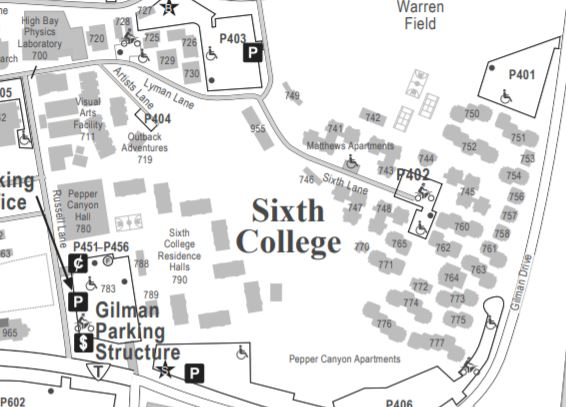
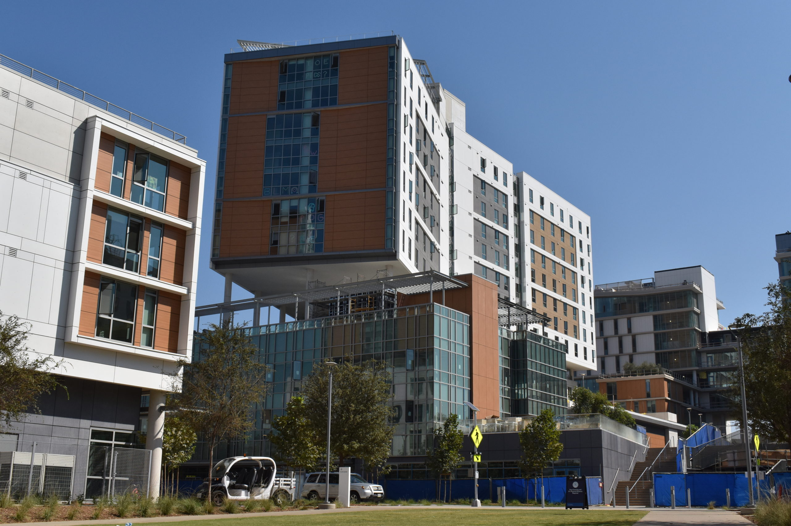
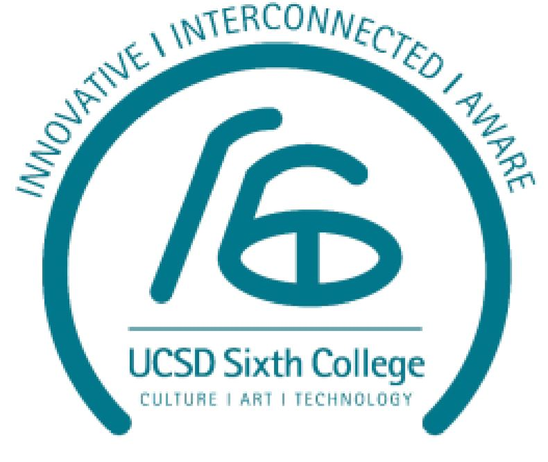

Sixth
Innovative, Interconnected, Aware
Sixth College draws on its theme—Culture, Art, and Technology—to
meet the lifelong educational needs of students in the twenty-first century.
New global challenges demand new approaches to visualization, problem-solving,
information handling, and communication across cultural and disciplinary boundaries.
Enrollment(2020): 5,008 - 15.7% of total enrollment


There are a total of 3 general education requirements for Sixth College: Core Sequence -
Culture, Art, and Technology (CAT), Breadth Requirements, and Upper Division Requirements.
Core Sequence: Culture, Art, and Technology (CAT)
. CAT is a 3 course
highly interdisciplinary sequence integrating learning in arts and humanities,
social sciences, science, and engineering.
Breadth Requirements
- CAT 1 (4 units) Fall
- CAT 2 (6 units) Winter
- CAT 3 (6 units) Spring
Take 11 breadth courses encompassing a variety of disciplines outlined in the Sixth College GE Requirements list:
Upper Division Requirements
- Information Technology Fluency (1 computing/programming course)
- Social Analysis (2 social science courses)
- Narrative, Aesthetic, and Historical Reasoning (2 humanities courses)
- Analytical and Scientific Methods (2 science courses)
- Structured Reasoning (1 math/logic course)
- Exploring Data (1 statistics course)
- Art Making (8 units)
Refer
here
to classes that satisfy each discipline. Note that AP and IB credit may be applied
towards these areas.
- Practicum Course/Project (4 units): The Sixth College Practicum is an upper-division, four-unit general education requirement that embodies the college’s commitment to active, hands-on experiential learning. Students enroll in courses that have a service-learning or communitybased component to the curriculum such as an internship, research project, or study abroad program in order to develop both their academic and professional skills. It is an opportunity for students to integrate theory and practice by making connections between classroom learning and community experiences, both locally and abroad. Many Practicum options require students to submit a proposal the quarter before they begin their Practicum project. Visit here for more information.
- CAT 125/125R: Public Rhetoric and Practical Communication (4 units): CAT 125 is an upper-division composition course in public rhetoric and practical communication, including oral presentation, academic writing in print formats, and digital content-creation. Visit here for more information
